Objects that hold something.
Brass, sandalwood, prayer beads. Sold plainly, without the incense-shop mysticism — these are ordinary household things in India, and they are good objects on their own terms.
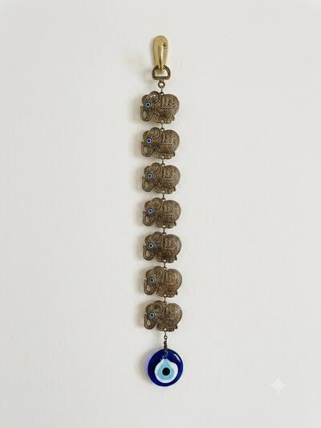
Material Metal Length 16 inches / 40.6 cm Width; 2 inches / 5.08 cm 7 elephant and evil eye figures, believed to bring good luck and to expel…
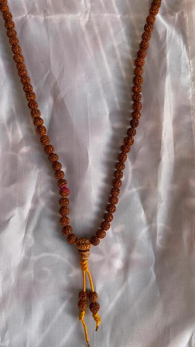
🕉️ Natural Rudraksha Japa Mala: Made with authentic 7mm Rudraksha beads, ideal for spiritual use and daily chanting, length 16 inches 📿 108 (+5)…
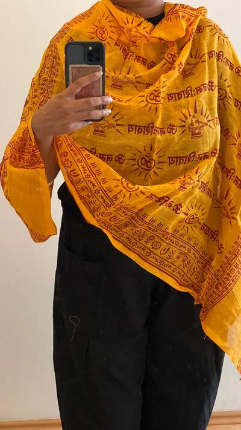
Indian Yellow/Orange Cotton Altar Shawl/Scarf for Hindu rituals, prayer, mantras, or meditation and puja. Hand printed with red color “Om Namah…
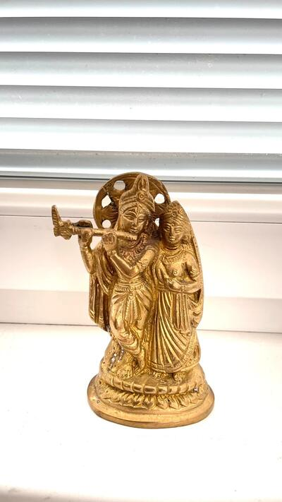
Worship Idol of Hindu Gods Radha Krishna for Spirituality, Peace, Harmony, Good Luck, Wellness. Beautiful spiritual home decor. Brass Statue Height:…
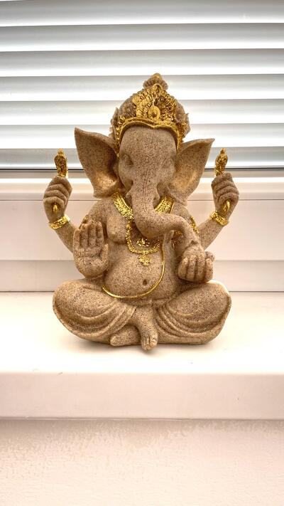
Positivity, wisdom, and timeless Indian artistry in this handcrafted Hindu god Ganesha Idol, a perfect blend of spiritual elegance and modern décor…
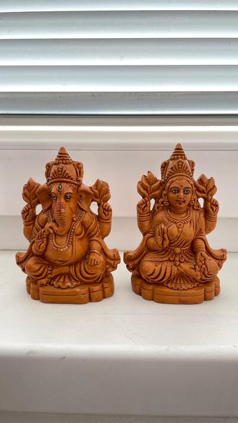
Mini Ganesha and Parvati Clay Sculpture - Handmade Decorative Spiritual Hindu Gods Sculptures of Ganesh and Parvati for Office or House Warming Gift…
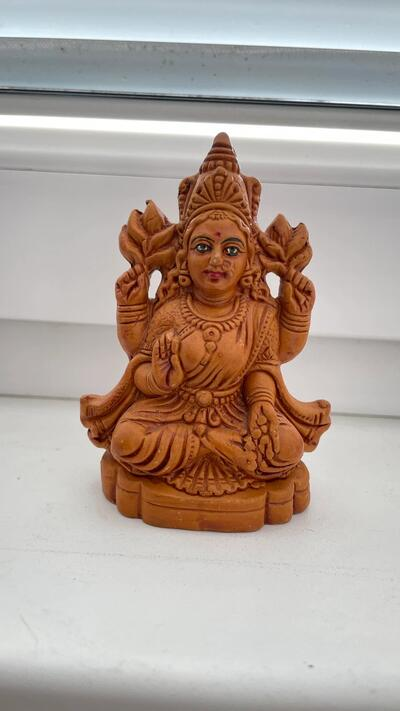
Mini Parvati Clay Sculpture - Handmade Decorative Spiritual Hindu Goddess Parvati Figure for Office or House Warming Gift or Home Decor Size:…
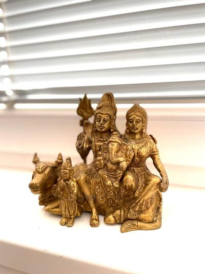
Beautiful spiritual antique golden figurine featuring full Hindu god Shiva family (Shiva Parvati and Ganesh sitting in Nandi). Dimensions - Size 5.5…
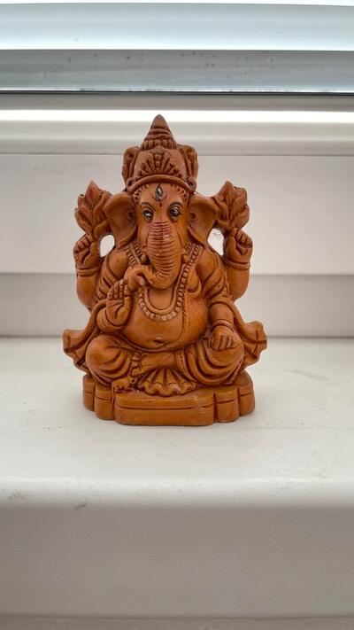
Mini Ganesha Clay Sculpture - Handmade Decorative Spiritual Lord Ganesh Figure for Office or House Warming Gift or Home Decor Size: 3.1X1.9X4 (L X B…
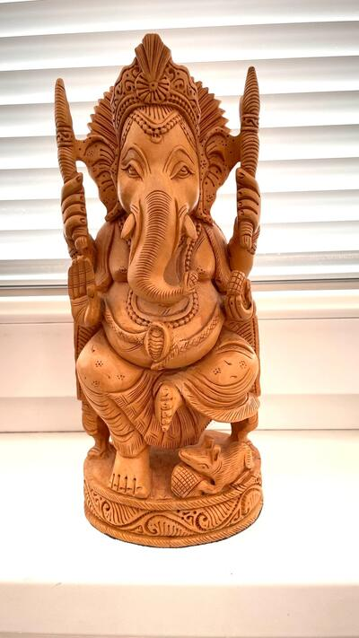
Hand Carved Wooden Hindu God Ganesha is seated on a beautifully carved pedestal, this beautiful, spiritual and elegant Lord Ganesha statue brings…
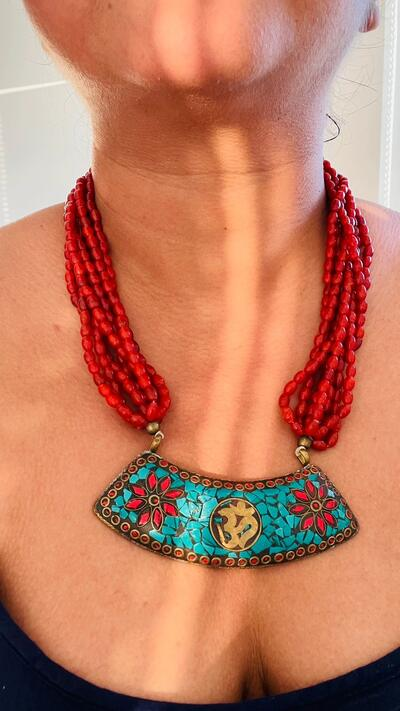
A gorgeous, chunky, Tibetan style necklace with Om 🕉️ carving. Coral and turquoise inlay on a brass plate with multi strand glass beads and wooden…
Nothing matches those filters.
Prices are converted from Czech koruna at the European Central Bank reference rate and rounded to the nearest euro. Vinted charges in your own currency at checkout, so the amount you pay may differ slightly.
How buying works
- Ask first, if you want. Measurements, fabric, how something actually fits — message me and I will tell you straight, including when a piece is not right for you.
- Buy it on Vinted. Every piece links to its listing. Payment, postage and buyer protection are all handled there, so there is no separate checkout on this site and I never see your card details.
- It posts from Prague. Usually within a day or two of the order. Vinted's buyer protection covers the return if the item is not as described.
Everything is second-hand or one-of-a-kind from my own collection, so each piece exists once — when it is gone it is gone. Sizes are the label size; ask me for real measurements before you buy.